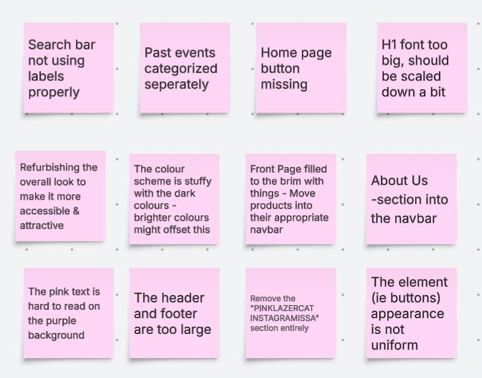

Develop
Idea Wall
We collected ideas for improving the shop on sticky notes. Here is the wall, written out, with the thinking behind each idea one click away.

Ideas and themes
Open a card to read what the idea means and why it came up. We sorted the twelve ideas into three themes: how people get around the site, how it looks, and how search and events work.
The three themes and the card descriptions below are first drafts written from the sticky notes and our findings. Edit them to match what the team actually discussed.
Tip: cards marked Supports chosen idea feed into the idea we picked below.
Navigation & layout 5 ideas
Home page button missing
There is no clear way back to the front page from the inner pages.
A visible home button, or a logo that links to the front page, would let visitors start over without using the browser's back button.
About Us section into the navbar
Move the About Us content into the navigation, so visitors can find the story behind the shop in one click and the front page has less to carry.
Front page filled to the brim with things: move products into their appropriate navbar
The front page shows too much at once. Product groups could live under their own navbar entries, so the front page stays calm and easy to scan.
The header and footer are too large
Both take up a lot of screen space. Slimmer versions leave more room for the actual content. This matches our finding that the navbar covers almost half of the view.
Remove the “PINKLAZERCAT INSTAGRAMISSA” section entirely
The section heading is Finnish for “PinkLazerCat on Instagram”. It makes the front page longer and busier. Removing it, or replacing it with a small link to the account, would simplify the page.
Visual design 5 ideas
H1 font too big, should be scaled down a bit
The main headings are very large and dominate the page. A slightly smaller size keeps the hierarchy clear while giving the content more room.
The colour scheme is stuffy with the dark colours: brighter colours might offset this
The dark colours make the pages feel heavy. Brighter colours could make the shop feel lighter and more inviting. This links to our finding that the pages feel stuffy.
The pink text is hard to read on the purple background
Pink text on a purple background has weak contrast. Changing the text colour or the background would make it readable for everyone.
Refurbishing the overall look to make it more accessible & attractive
A wider refresh of the site's look, covering colours, type and spacing, so that the shop is both nicer to look at and easier to use.
The elements (i.e. buttons) appearance is not uniform
Buttons and other elements look different from page to page. One consistent style would make the site feel more trustworthy and easier to learn.
Search & events 2 ideas
Search bar not using labels properly
The search does not use labels in a way that helps people find products. This answers our finding that search does not work as expected.
Past events categorized separately
Old events stay in the events list. Moving them to their own section keeps current events easy to see. This answers our finding that the events page should be updated more often.
Develop
Selection
Which idea did we choose, and why?
We collected suggestions for developing the website and also asked the buyer persona to look at the site, to get an alternative view of its usability. They found the website visually pleasant and especially liked the navigation menu (navbar). However, they also noticed shortcomings in the search function.
Original in Finnish
Keräsimme verkkosivujen kehitysehdotuksia ja pyysimme myös ostajapersoonaa tarkastelemaan sivustoa saadaksemme vaihtoehtoisen näkökulman sen käytettävyyteen. Hänen mielestään verkkosivut olivat visuaalisesti miellyttävät, ja hän piti erityisesti navigointivalikosta. Hän kuitenkin huomasi myös hakutoiminnon puutteet.
Based on these observations we identified two main areas for development: improving the search function and making the navigation menu smaller. The need to improve search came from the buyer persona's feedback, while shrinking the navigation menu was based on our own team's observations. We chose the navigation menu as our focus because its large size takes up a significant part of the visible space on the website.
Original in Finnish
Havaintojen perusteella tunnistimme kaksi keskeistä kehityskohdetta: hakutoiminnon parantamisen ja navigointivalikon pienentämisen. Hakutoiminnon kehitystarve nousi esiin ostajapersoonan palautteesta, kun taas navigointivalikon pienentäminen perustui ryhmämme omiin havaintoihin. Valitsimme navigointivalikon kehityskohteeksi, koska sen suuri koko vie huomattavan osan verkkosivujen näkyvästä tilasta.
Making the navbar smaller and the pages clearer overall
Original in Finnish
Navbarin pienentäminen ja sivujen yleinen selkeyttäminen
Expected benefit
Website usability improves when the navigation menu takes up less space and moving around the site is clearer and smoother.
Original in Finnish
Verkkosivujen käytettävyys paranee, kun navigointivalikko vie vähemmän tilaa ja sivustolla liikkuminen on selkeämpää ja sujuvampaa.
How it works: The navigation bar is reduced in size so that it takes up less space on the screen. Users can navigate between pages more easily, while the main content remains more visible and accessible. Still to find out: We still need to test whether the smaller navigation bar improves the user experience and makes the website easier to navigate. We also need to find out if all important navigation links remain easy to access.